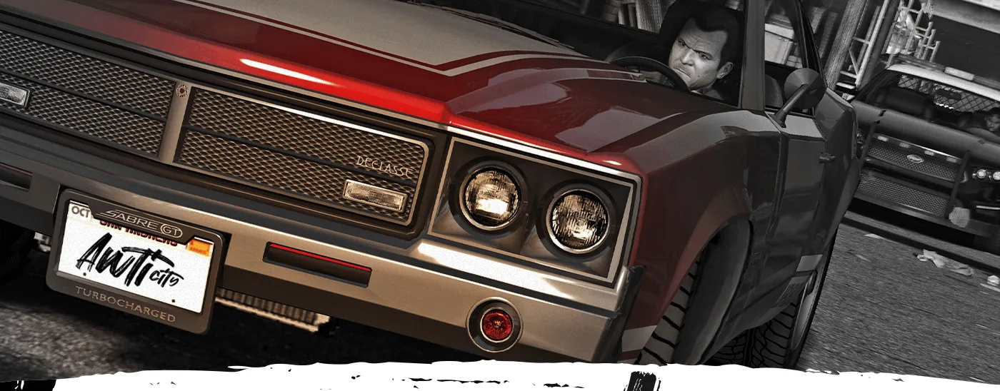
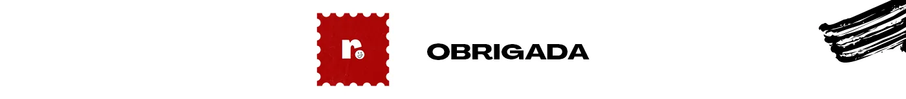

LOGO
Awti City.
gta rp
Logo para um servidor de roleplay de GTA no FiveM. O traço de pincel seco, quase pichação, foi pensado para a rua: aparece na placa do carro, na tela de entrada do servidor e numa cena noturna da cidade, com uma fonte manuscrita de apoio.
- CLIENTE
- Awti City
- ANO
- 2023
- ENTREGAS
- Logo · Aplicações em cena · Tipografia de apoio
- FERRAMENTAS
- Illustrator · Photoshop · After Effects
- CRÉDITOS
- redlab studio

